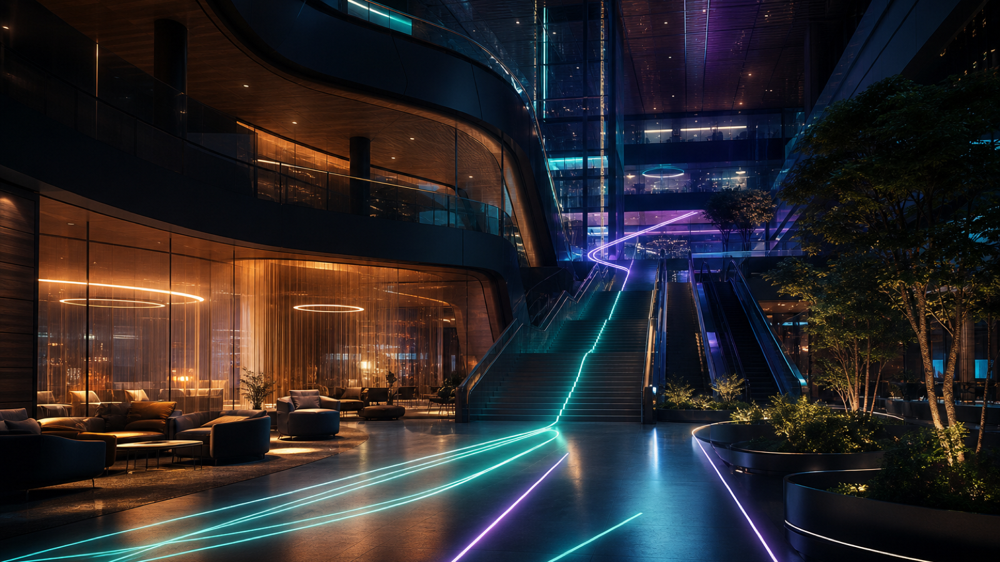

Digital twin · Multi-platform
An entire class rebuilds its own building, pixel by pixel — and my team's job is making it walkable from any device on earth.
Role
Web dev team — 3-person sub-team
Status
In progress
Platforms
Web · Meta Quest · Vision Pro
Stack
Omniverse · JavaScript
The whole class built the twin together: teams modeled the architecture, the interiors, the details of Iovine & Young Hall in NVIDIA Omniverse. But a digital twin that only runs on a workstation with Omniverse installed is a demo, not a product.
My three-person sub-team owns the delivery layer — taking the class's Omniverse world and making it explorable on the open web, in a Meta Quest, and on Apple Vision Pro, without losing what makes it feel like the real building.
Rather than inventing a new way to move through a building, we borrowed one everybody has used: waypoint navigation, the way Google Maps walks you down a street.
Waypoint navigation
A Google Maps-style system — pick a destination, glide between viewpoints. Zero learning curve.
Three platforms, one twin
The same experience delivered across Web, Meta Quest, and Apple Vision Pro from one source of truth.
Student-built architecture
Integrated with the building model produced by classmates' teams — our layer sits on the class's shared work.
Seamless transitions
Movement between virtual viewpoints is continuous, so exploring feels like walking, not clicking through slides.

Where it stands
The twin walks across Web, Quest, and Vision Pro — the same building, one navigation system, three very different screens.